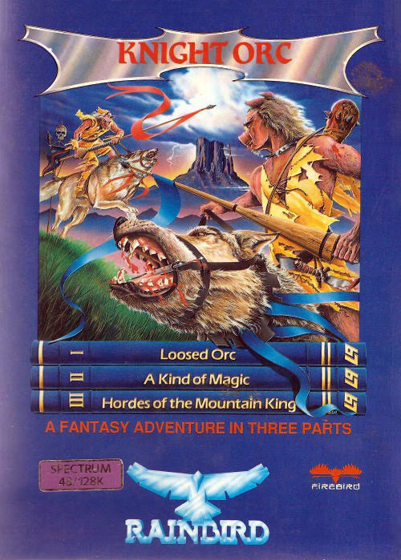
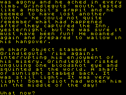

Knight Orc


{kind=link}

| Publisher: | Rainbird |
| Price: | £14.95, Three tapes |
| Year: | 1987 |
| Source: | CRASH, Issue 49 |

We’re always ready to express our sympathy for the persecuted and the exiled, and in the three-part Knight Orc you can take on the role of a persecuted and exiled orc, wandering helplessly around Middle Earth, running the risk of being injured or killed by almost anyone you meet.
As Level 9’s text-only adventure begins you are lanced by a knight on his horse. You do survive, but the landscape you find yourself in is far from encouraging. There is a dismal fairground, a hideous-looking castle, and a gallows on the skyline.

And when you set out on foot it’s a lonely journey. Ask any of the characters on the road for help, and they all say ‘Get lost buster’.
There’s no comfort to be found in the Orc’s Head Inn, either. It has an ‘atmosphere of gloom and depression’, and the licensee certainly doesn’t serve beer to orcs. If you linger in the pub long enough, violent incidents arise.
But being killed isn’t so much a setback as you might have feared. You are promptly carted off to Paradise (or is it Valhalla?), and you can get booted out by a rather stuck-up Valkyrie equally promptly. Your stay in Paradise may not last more than a few seconds — enjoy it while you can, before you resume the trials and tribulations of the game.
The three subgames Loosed Orc, A Kind Of Magic and Hordes Of The Mountain King are each on a different tape and together make up the Knight Orc world.
It’s a world of magic, with 21 spells to learn, but also a world of woods, glades, spinneys and groves of all kinds of trees, and you can spend much time wandering around them (or through the 36-page handbook and novella). In some parts of the woodland there are golden objects to be found; other areas have nothing at all to offer. Probe every nook and cranny you can, though the program will never tire of telling you that ‘that’s probably just scenery’. It’s an orc’s life.
CRITICISM
“Never has so much been packed on so few chips for so many. Knight Orc is so complex it’s an absolute pleasure to play — not so much a game, more of a book in which you can write your own ending. The text is beautifully-written, both interesting and informative story; the vocabulary is extremely user-friendly and ‘real’ sentences or even paragraphs can be constructed. But what makes Knight Orc so atmospheric is the number of characters roaming about the place — they don’t just exist as in most adventures, they actually have lives all of their own, just as much as the player. The price is hardly high for a game that will supply such long-lasting entertainment and involvement.”
PAUL
“In Knight Orc I’m most impressed by Rainbird’s masterly grasp of what even the nonadventurer wants. One of the best features is the ability to examine almost everything within reach; examining the various sorts of trees is an experience in itself! The only problem is the speed with which you can die; if you happen to fall into a fight, then hours of careful adventuring can be gone in a flash. Still, in a game of this complexity, these are the things you have to look out for. Knight Orc is an atmospheric, intriguing, absorbing (time-consuming) and thoroughly worthwhile adventure. Together with the excellent novella, Level 9’s achievement more than justifies the high price.”
MIKE
“Knight Orc is a highly complex fantasy adventure, full of murder, mystery and suspense — and the odd piece of wit! A few graphics would have gone down well, but the program is easy to use and the puzzles are challenging.”
NICK
COMMENTS
| Graphics: | Text only |
| Atmosphere: | Beautifully-crafted descriptions bring the game to life, and the text-only display allows you to visualise exactly what you want (as gory or as simple as your imagination allows!) |
| General rating: | A complex, challenging adventure packed with detail — Level 9’s best to date, and that’s saying something |
| Presentation: | 89% |
| Vocabulary: | 92% |
| Complexity: | 92% |
| Addictive qualities: | 90% |
| Overall: | 92% |